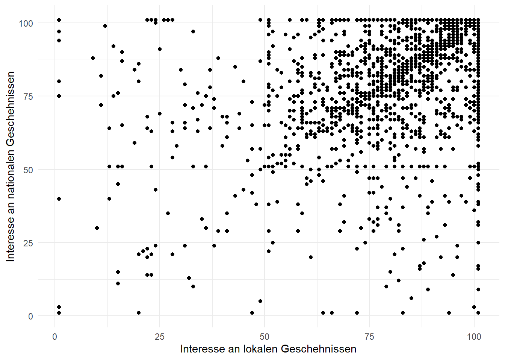
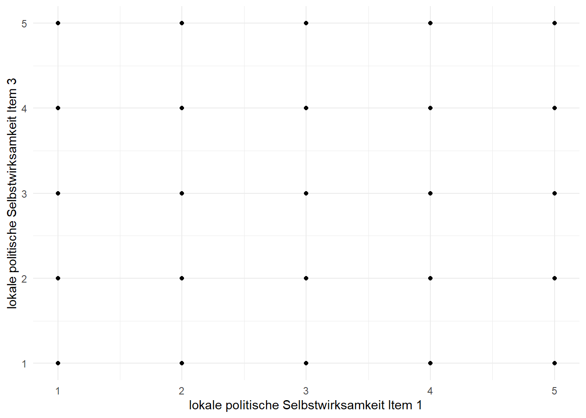
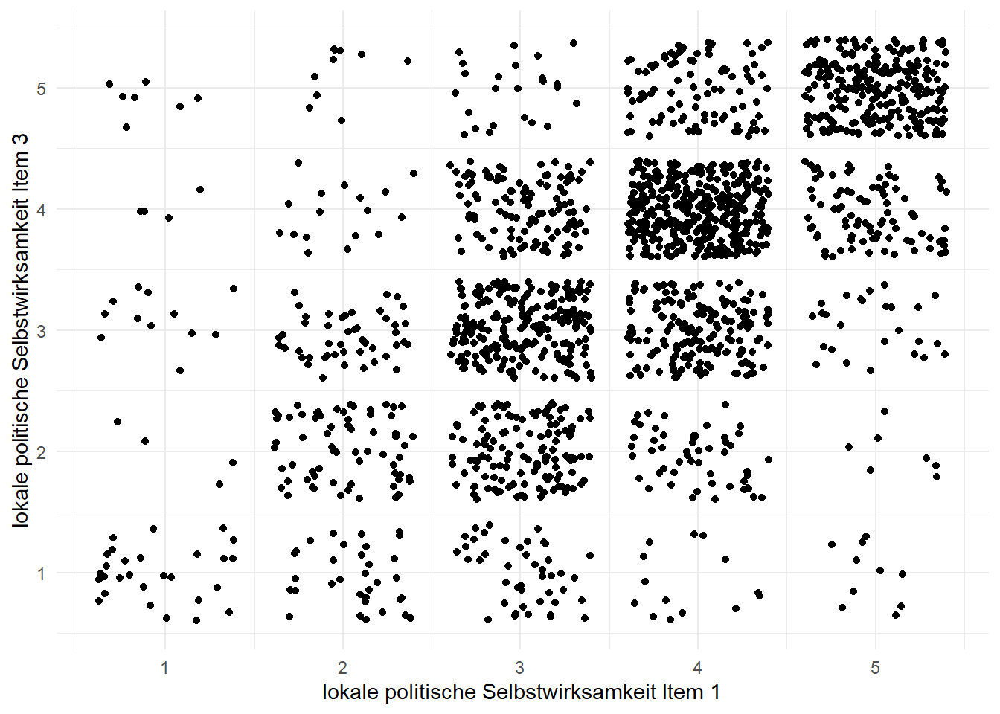
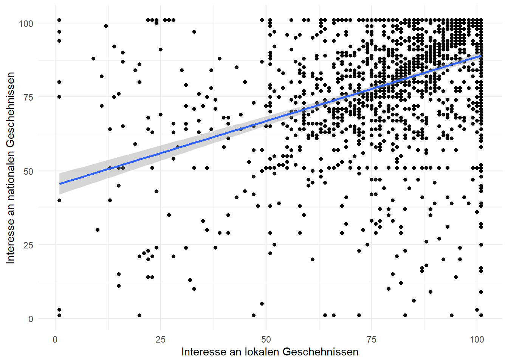
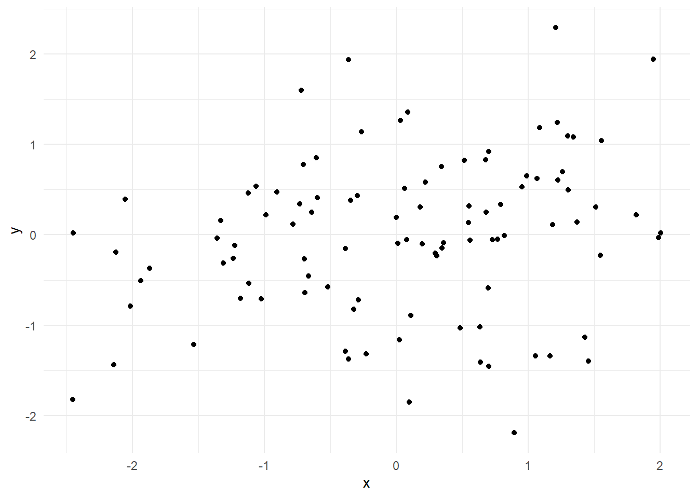

7Zusammenhänge zwischen nominalen und ordinalen Variablen: Korrelationen
7.1 Statistische Grundlagen
7.2 Deskription und Visulisierung der Daten
Wir starten wie im letzten Kapitel damit, unsere R-Umgebung vorzubereiten, indem wir das tidyverse laden, den Datensatz einlesen und die Optionen so ändern, dass kleine Zahlen in einem uns gewohnten Format angezeigt werden.
# Lädt das tidyverselibrary(tidyverse)
── Attaching core tidyverse packages ──────────────────────── tidyverse 2.0.0 ──
✔ dplyr 1.1.4 ✔ readr 2.1.5
✔ forcats 1.0.0 ✔ stringr 1.5.1
✔ ggplot2 3.5.1 ✔ tibble 3.2.1
✔ lubridate 1.9.3 ✔ tidyr 1.3.1
✔ purrr 1.0.2
── Conflicts ────────────────────────────────────────── tidyverse_conflicts() ──
✖ dplyr::filter() masks stats::filter()
✖ dplyr::lag() masks stats::lag()
ℹ Use the conflicted package (<http://conflicted.r-lib.org/>) to force all conflicts to become errors
# Liest die Daten eindf_lokal <-read.csv("Daten/lokalkommunikation.csv")# Stellt ein, dass sehr kleine Zahlen normal dargestellt werdenoptions(scipen =999)
Eine gute Möglichkeit, den Zusammenhang zwischen zwei metrischen Variablen grafisch darzustellen, ist durch ein sogenanntes Streudiagramm bzw. eine Punktewolke. Dabei wird eine Variable auf der x- und die andere auf der y-Achse dargestellt. Schauen wir uns das einmal am Besipel der Spalten A202_01 und A202_02 an, in denen das Interesse an Nachrichten über lokale bzw. nationale Geschehnisse abgefragt wurde.1 Zunächst benennen wir beiden Spalten um. Anschließend rufen wir ggplot() auf, geben dort innerhalb von aes() an, welche Variable wir auf der x- bzw. y-Achse darstellen wollen. Dann müssen wir nur noch geom_point() ergänzen. Mit theme_minimal() und labs() verschönern wir unseren Plot gleich noch ein wenig.
# Benennt die Spalten A202_01 und A202_02 umdf_lokal <- df_lokal |>rename(interesseLokal = A202_01,interesseDE = A202_02)# Erstellt ein Streudiagramm der beiden SpaltenstreudiagrammInt <- df_lokal |>ggplot(aes(x = interesseLokal, y = interesseDE))+geom_point()+theme_minimal()+labs(x ="Interesse an lokalen Geschehnissen", y ="Interesse an nationalen Geschehnissen")streudiagrammInt

Das sieht gar nicht schlecht aus. Wir sehen allerdings, dass relativ viele Befragte die Skala vollständig ausgreizt haben und den jeweiligen Maximalwert (101) angegeben haben. Daran können wir auch ein Verhalten von geom_point() erhnen, das tendenziell problematisch ist. Und zwar werden identische Datenpunkte einfach übereinander gelegt. Wenn also zwei Personen die exakt gleichen Antworten gegeben haben, zeigt geom_point() nur einen Punkt an.
Schauen wir uns das mal am Beispiel der Spalten A208_01 und A208_03 an. In beiden Spalten wurden Aspekte der politischen Selbstwirksamkeit abgefragt, jeweils bezogen auf den eigenen Wohnort. Die konkreten Formulierungen lauteten:
A208_01: Wichtige Fragen der Lokalpolitik kann ich gut verstehen und einschätzen.
A208_03: Ich traue mir zu, mich an einem Gespräch über Fragen der Lokalpolitik aktiv zu beteiligen.
Schauen wir uns einmal ein Streudiagramm dieser beiden Variablen an. Da die Items Teil einer größeren Abfrage waren und üblicherweise nicht einzeln ausgwertet werden würden, sind die Beschriftungen hier sehr pragmatisch gewählt.
# Benennt die Spalten A208_01 und A208_03 umdf_lokal <- df_lokal |>rename(polSelbstw1 = A208_01,polSelbstw3 = A208_03)# Erstellt ein Streudiagramm der beiden SpaltenstreudiagrammSelbstw <- df_lokal |>ggplot(aes(x = polSelbstw1, y = polSelbstw3))+geom_point()+theme_minimal()+labs(x ="lokale politische Selbstwirksamkeit Item 1", y ="lokale politische Selbstwirksamkeit Item 3")streudiagrammSelbstw
Warning: Removed 2 rows containing missing values or values outside the scale range
(`geom_point()`).

Hier wird das Problem an geom_point() deutlich. Die Grafik verrät uns herzlich wenig. Wir haben nach wie vor keinerlei Vorstellung davon, wie stark der Zusammenhang sein könnte. Wir erfahren lediglich, dass jede mögliche Wertekombination im Datensatz enthalten ist. Es gibt also z.B. Leute, die auf eins der Items mit 1 (= “stimme überhaupt nicht zu”) und auf das andere mit 5 (= “stimme sehr zu”) geantwortet haben.
In solchen Fällen ist es sinnvoll, die Alternative geom_jitter() zu nutzen. Jitter ist Englisch für zittern und genau das tut die Funktion: Sie verschiebt die einzelen Punkte minimal nach oben, unten, rechts und links (lässt sie also zittern), sodass wir besser erkennen können, wie die Daten verteilt sind. Um das umzusetzen, müssen wir nur geom_point() durch geom_jitter() ersetzen.
# Erstellt ein Streudiagramm der beiden Spalten mit geom_jitter()streudiagrammSelbstw <- df_lokal |>ggplot(aes(x = polSelbstw1, y = polSelbstw3))+geom_jitter()+theme_minimal()+labs(x ="lokale politische Selbstwirksamkeit Item 1", y ="lokale politische Selbstwirksamkeit Item 3")streudiagrammSelbstw
Warning: Removed 2 rows containing missing values or values outside the scale range
(`geom_point()`).

Wir sehen nun relativ eindeutig, dass es einen Zusammenhang zwischen den beiden Variablen zu geben scheint.
7.3 Korrelationen berechnen
7.3.1 Pearson Korrelationen
Pearson Korrelationen, also normale Korrelationen zwischen zwei metrischen Variablen, können wir mit der cor.test()-Funktion berechnen, der wir mit den Argumenten xund y zwei Variablen übergeben müssen. Die Funktion gibt uns dann eine Liste zurück. Das Element estimate enthält den Korrelationskoeffizienten. Den dazugehörigen p-Wert können wir über das Element p.value abrufen. Beides speichern wir hier in einem neuen Objekt, indem wir cor.test() innerhalb von summarise() aufrufen. Der Übersicht halber runden wir die jeweiligen Ergebnisse auf 3 Nachkommastellen.
# Erstellt ein neues Objekt in dem der Korrelationskoeffizient und der zugehörigen p-Wert für die Korelation zwischen interesseLokal und interesseDE gespeichert wird.korrelationInt <- df_lokal |>summarise(Korrelation =round(cor.test(x = interesseLokal, y = interesseDE)$estimate, 3),pWert =round(cor.test(x = interesseLokal, y = interesseDE)$p.value, 3))korrelationInt
Korrelation pWert
1 0.422 0
Die Korrelation beträgt demnach 0,422. Wir können also von einer mäßigen Korrelation sprechen. Der gerundete p-Wert wird als 0 angegeben. Da p-Werte aber immer zwischen 0 und 1 liegen müssen und nie genau 0 (oder 1) sein können, können wir dem entnehmen, dass die Abweichung von 0 erst nach der dritten Nachkommastelle kommt2. Entsprechend würden wir den p-Wert als <0,001 angeben. Bevor wir die Ergebnisse verschriftlichen können, sollten wir noch die Mittelwerte und Standardabweichungen der beiden Variablen berechnen, die immer zusätzlich angegeben werden sollten.
# Berechnet Mittelwert und Standardabweichung der Variablen interesseLokal und interesseDEMWsInteresse <- df_lokal |>summarise(MWIntLokal =round(mean(interesseLokal, na.rm =TRUE), 2),SDIntLokal =round(sd(interesseLokal, na.rm =TRUE), 2),MWIntDE =round(mean(interesseDE, na.rm =TRUE), 2),SDIntDE =round(sd(interesseDE, na.rm =TRUE), 2))MWsInteresse
Damit haben wir alle notwendigen Informationen, um die Ergebnisse zu verschriftlichen:
Durch eine Korrelation wurde geprüft, ob ein Zusammenhang zwischen dem Interesse an lokalen Geschehnissen (M = 81,83; SD = 20,34) und dem Interesse an nationalen Geschehnissen (M = 80,73; SD = 20,91) besteht. Das Ergebnis zeigt, dass ein mäßig starker, signifikanter Zusammenhang besteht (r = 0,422; p < 0,001).
7.3.2 Rangkorrelationen
Bei der Korrelation, die wir gerade berechnet haben, handelt es sich um eine normale Korrelation zwischen zwei metrischen Variablen. Wie im Video besprochen, können wir auch sogeannte Rangkorrelationen berechnen, wenn mindestens eine der beiden Variablen ordinal skaliert ist. Dazu müssen wir der cor.test()-Funktion lediglich das zusätzliche Argument method mit dem Wert "spearman" übergeben.
# Benennt die Spalten A604 und A605 um df_lokal <- df_lokal |>rename(Wohndauer = A604, Ortsgroeße = A605)# Erstellt ein neues Objekt in dem der Rangkorrelationskoeffizient und der zugehörigen p-Wert für die Korelation zwischen Wohndauer und Ortsgroeße gespeichert wird.korrelationOrt <- df_lokal |>summarise(Korrelation =round(cor.test(x = Wohndauer, y = Ortsgroeße, method ="spearman")$estimate, 3),pWert =round(cor.test(x = interesseLokal, y = interesseDE,method ="spearman")$p.value, 3))
Warning: There were 2 warnings in `summarise()`.
The first warning was:
ℹ In argument: `Korrelation = round(...)`.
Caused by warning in `cor.test.default()`:
! Kann exakten p-Wert bei Bindungen nicht berechnen
ℹ Run `dplyr::last_dplyr_warnings()` to see the 1 remaining warning.
korrelationOrt
Korrelation pWert
1 -0.089 0
Wenn wir den Befehl ausführen, gibt R eine Warnung aus. Der Kern der Botschaft lautet: Kann exakten p-Wert bei Bindungen nicht berechnen. Damit weist R uns lediglich darauf hin, dass der berechnete p-Wert nur eine Schätzung und keine genaue Berechnung ist. Sie können die Warnung entweder ignorieren, oder dem Aufruf von cor.test() das Argument exact = FALSE hinzufügen. Beachten Sie, dass das nur nötig ist, wenn Sie eine Spearman-Korrelation berechnen.
Bevor wir die Ergebnisse berichten können, müssen wir wieder deskriptive Werte berechnen. Anders als im Beispiel oben, entscheiden wir uns diesmal für den Median, da es sich um ordinale Variablen handelt.
# Berechnet den Median, der Variablen Wohndauer und OrtsgroeßemedianDauerGroeße <- df_lokal |>summarise(medianDauer =median(Wohndauer, na.rm =TRUE), medianGroeße =median(Ortsgroeße, na.rm =TRUE))medianDauerGroeße
medianDauer medianGroeße
1 6 3
Nun haben wir alle relevanten Informationen, um das Ergebnis zu verschriftlichen.
Durch eine Rangkorrelation wurde geprüft, ob ein Zusammenhang zwischen der Wohndauer (Median = 6; “mehr als 20 Jahre”) und der Größe des Wohnorts (Median = 3; Kleinstadt) besteht. Die beiden Variablen hängen signifikant, aber sehr schwach, negativ zusammen (r = -0,089; p < 0,001).
7.3.3 Korrelationskoeffizienten visualisieren
Oben haben wir uns bereits angeschaut, wie wir ein einfaches Streudiagramm von zwei Variablen erstellen können. Wenn wir eine Korrelation berechnen, ist es oft sinnvoll, diese auch grafisch darzustellen. Dazu können wir unser Diagramm von oben durch geom_smooth() mit dem Argument method = "lm" ergänzen. Diese Funktion zeichnet eine Linie ein. Durch method = "lm" geben wir an, dass wir eine Gerade zeichnen wollen, die der Korrelation entspricht. Um diese Linie herum wird ein grauer Bereich eingezeichnet. Hierbei handelt es sich um das Konfidenzintervall, das wir im letzten Kapitel kennengelernt haben.
# Erstellt ein Streudiagramm der beiden Variablen interesseLokal und interesseDE mit eingezeichneter KorrelationsgeradestreudiagrammInt <- df_lokal |>ggplot(aes(x = interesseLokal, y = interesseDE))+geom_point()+geom_smooth(method ="lm")+theme_minimal()+labs(x ="Interesse an lokalen Geschehnissen", y ="Interesse an nationalen Geschehnissen")streudiagrammInt
`geom_smooth()` using formula = 'y ~ x'

7.4 Korrelationen erkennen und einschätzen
Korrelationen wie wir sie in diesem Kapitel kennengelernt haben anhand von Daten zu erkennen, ist gar nicht so einfach. Gleichzeitig können sehr kleine p-Werte dazu verleiten, die tatsächliche Bedeutung eines Zusammenhangs zu überschätzen. Beispielsweise hat eine Auswertung von Meta-Analysen in der Kommunikationswissenschaft ergeben, dass die durchschnittliche Effektstärke im Fach gerade einmal r = 0,21 beträgt (Rains et al., 2018). Grafisch dargestellt sieht eine solche Korrelation etwa so aus:

Die beiden fiktiven Variablen hängen zwar zusammen, aber wirklich leicht zu erkennen ist das optisch nicht. Zusammenhänge zu erkennen und Gefühlt dafür zu bekommen, wie verschieden starke Korrelationen eigentlich aussehen ist vor allem Übungssache. Wenn Sie Lust haben, können Sie mit dem kleinen Spiel unten etwas üben.
Auf die Datentransformation aus der Präsenzübung verzichten wir an dieser Stelle.↩︎
In diesem konkreten Fall folgt die erste Ziffer, die nicht Null ist an Stelle 81. Der p-Wert lautet: 0,000000000000000000000000000000000000000000000000000000000000000000000000000000008204762↩︎